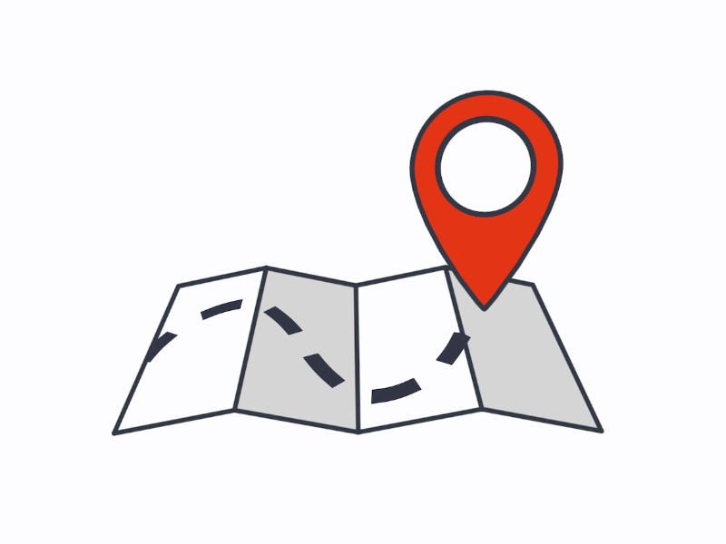

Medical appointments es un proyecto que va dedicado a todas aquellas personas con problemas de salud que requieran atención médica en su hogar.
Si eres paciente podrás resolver todas tus dudas o problemas en la opción 'Pacientes' del menú. Si eres médico ve a la opción 'Médicos' que también se encuentra en el menú.
Pero si quieres saber un poco más de nosotros visita la opción 'Acerca de' donde podrás conocer algunos detalles que no sabías de nosotros...
¡Gracias por usar nuestra aplicación!
A continuación, se muestran las soluciones de dudas que talvez tengas sobre nuestra aplicación :)
Para crear una cita, solo necesitas ir a la sección 'Citas' del menú superior de la aplicación.
A continuación, se muestran las soluciones de dudas que talvez tengas sobre nuestra aplicación :)
Para tomar una cita, solo necesitas ir a la sección 'Citas' del menú superior de la aplicación. Por defecto la aplicación te mostrará las citas del día.
MedicApp es una aplicación móvil para crear citas médicas desde casa, dedicada a todos aquellos que no pueden asistir a una consulta médica físicamente.
Con MedicApp solo es necesario de un clic para que un profesional de la salud pueda ir a la puerta de tu hogar.

La salud es un componente prioritario para el ser humano, así como “es uno de los derechos fundamentales de todo ser humano sin distinción de raza, religión, ideología política o condición económica o social” según la OMS, es por eso que MedicApp busca darle la atención médica que usted se merece.
Si tiene más dudas puede comunicarse con nosotros a través de:
MedicalAppointments@medicapp.com
O a través del número:
Tel - 55 2450 5955